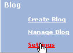
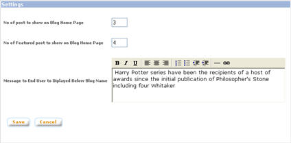
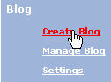
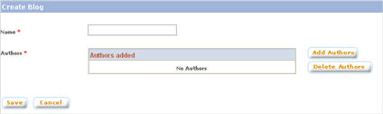
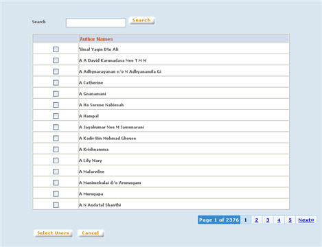
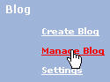
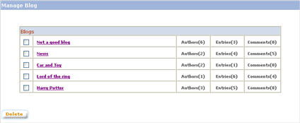
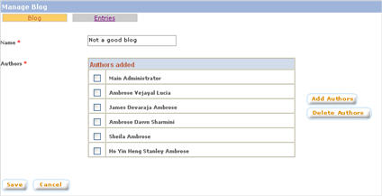
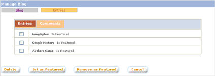
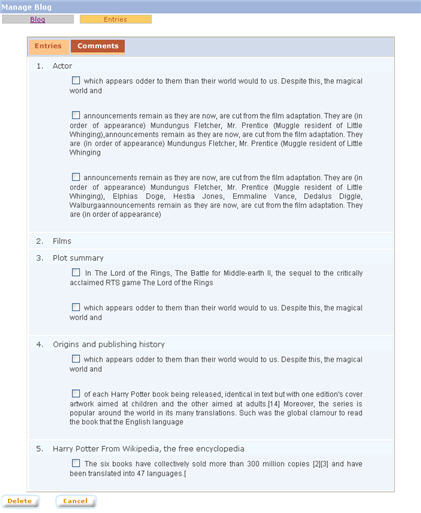

|
Blog
1. Blog Settings
a. Click on "Blog - Settings"
link from the left panel of the Admin main page

b. The blog "Settings"
page will be displayed

c. Make changes to the settings
and click on "Save" button to save the changes.
2. Create Blog
a. Click on "Create Blog"
link from the left panel of the Admin main page

b. The "Create Blog"
screen will be displayed

c. Enter the blog name.
d. Click on "Add Authors"
button to open a pop-up window to add authors.

e. Select / search for the
authors to be added, and click on "Select Users" button
to add the selected users to the blog.
f. Click on "Save"
button to create the blog.
3. Manage Blog
a. Click on "Create Blog"
link from the left panel of the Admin main page to access the blog
management functions

b. The "Manage Blog"
screen will be displayed

3.1. Edit Blog
a. From "Manage Blog"
screen, click on the name of the blog to be edited.

b. Change the blog name if
necessary.
To add new authors :
c. Click on "Add Authors"
button to open a pop-up window to add authors.
d. Select / search for the
authors to be added, and click on "Select Users" button
to add the selected users to the blog.
To delete authors :
e. Select the authors to be
removed
f. Click on "Delete Authors"
button to remove the selected authors.
g. Click on "Save"
button to save the changes.
3.2. Delete Blog
a. From "Manage Blog"
screen, select the blogs to be deleted
b. Click on "Delete"
button to delete the selected blogs.
3.3. Manage Entries
a. From "Manage Blog"
screen, click on the name of the blog
b. Click on the "Entries"
tab
c. The screen will display
the entry list for the blog.

To delete entries:
d. Select the entries to be
deleted
e. Click on the "Delete"
button to delete the selected entries
To flag entries as Featured:
f. Select the entries to be
flagged as featured
g. Click on the "Set as
Featured " button to flag the selected entries as featured
To remove Featured flag from entries:
h. Select the entries from
which the Featured flags are to be removed
i. Click on the "Remove
as Featured" button to remove the Featured flag from the selected
entries
3.4. Manage Comments
a. From "Manage Blog"
screen, click on the name of the blog
b. Click on the "Entries"
tab
c. The screen will display
the entry list for the blog.
d. Click on "Comments"
button. The comment list will be displayed

To delete comments:
e. Select the comments to be
deleted
f. Click on the "Delete"
button to delete the selected comments
|